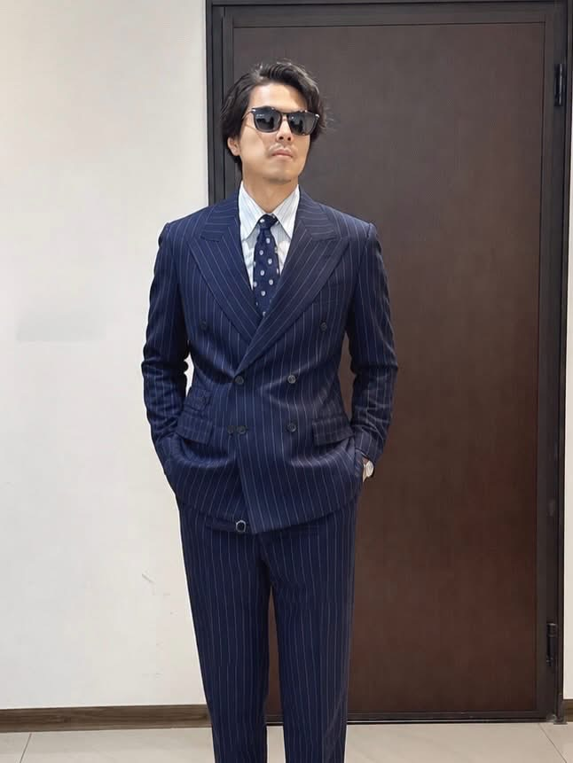

形象策略・色彩與款待
圈圈 何圈圈
好圈圈好感形象學苑｜款待形象策略顧問
- 10 年以上形象管理、色彩規劃與個人形象策略經驗
- 具科技產業及飯店餐飲服務實務背景
- 企業顧問與授課經驗：工研院、阿默蛋糕等
「形象讓人看見你的專業；款待讓人感受到你的用心。」
當客戶還沒開口，你看見了什麼？
一堂讓業務菁英重新理解「觀察、信任與專業形象」的兩小時實戰課。
看見細節，理解需求。
讓專業值得被信任。
有時候，客戶不是不需要你的專業，而是還沒感受到：你理解他在意的事。
你把產品解釋得很清楚，卻可能還沒問到對方真正的顧慮。
怕太熱情顯得推銷，太正式又讓人有壓力。
你已經是值得信任的顧問，第一印象卻未必能傳遞這份成熟。
當對話只圍繞商品與成交，客戶很難看見你真正的價值。
真正的業務高手，不是急著讓客戶知道自己有多厲害。
而是先讓客戶感受到：你真的想理解他。
從外在、互動與情境發現線索，避免只用第一印象替客戶下結論。
把觀察變成好問題，練習理解客戶真正重視的目標與顧慮。
從色彩、服裝與場合細節，呈現符合自己角色的可信任形象。
情境互動：相同客戶，兩種完全不同的理解方式。
辨識細節、避免主觀推測，練習問出更有深度的問題。
現場色彩、穿搭與形象示範，了解不同選擇傳遞的感受。
完成一張「下一場重要會面形象行動卡」，找到可以立刻調整的細節。
圖片為課程情境示意，非實際授課紀錄。
這堂課為你設計。
金融顧問、保險顧問、房仲、高端服務及 B2B 商務開發。
從個人業績走向帶領團隊，需要建立更成熟的專業辨識度。
不只想完成一次交易，更希望建立長期合作與轉介紹。
希望團隊不只熟悉商品，也更懂客戶、懂場合、懂專業呈現。
形象策略 × 西服訂製，讓專業不只被聽見，也能被看見。
好圈圈好感形象學苑｜款待形象策略顧問
「形象讓人看見你的專業；款待讓人感受到你的用心。」

IMAGESUIT 訂製西服｜主理人
「專業還沒開口，形象已經加分。」
不只是。課程從業務情境與客戶理解出發，結合觀察、溝通與個人專業形象，包含實際的穿搭示範。
適合。重點不是每個人都要穿西裝，而是知道如何在不同場合，選擇符合角色與自己的形象。
課程以實用教學與體驗為主，尾段會介紹可自由選擇的個人形象與訂製服務；不需購買才能參加課程。
目前尚在規劃，待主辦方確認後公布。可先登記課程意願。
兩小時，讓你從看見細節開始，練習更懂客戶，也讓客戶更容易看懂你的專業。
主辦方設定方式：將本頁原始碼中的 REGISTER_FORM_URL 改為 Google 表單公開報名網址。